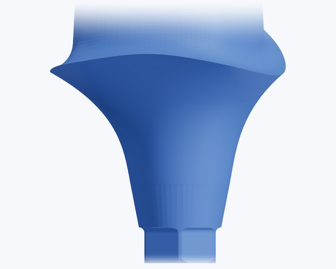
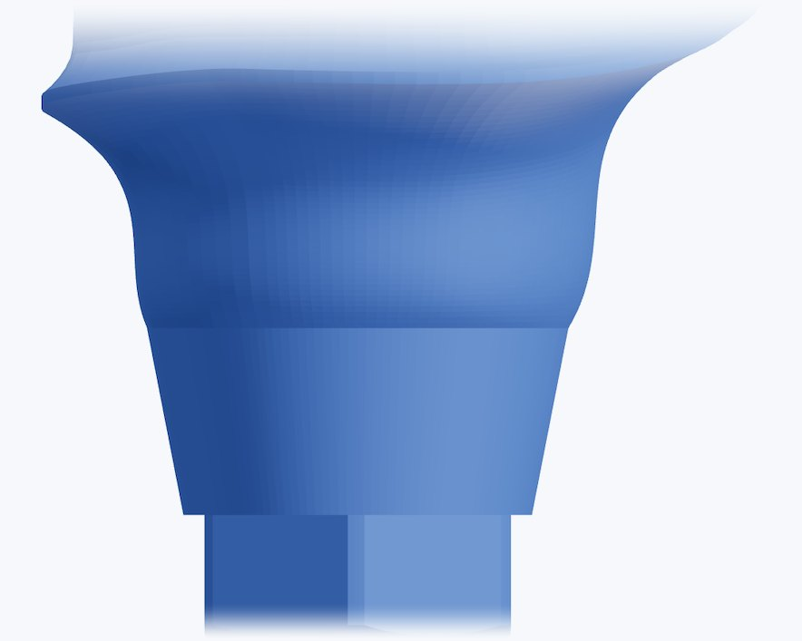
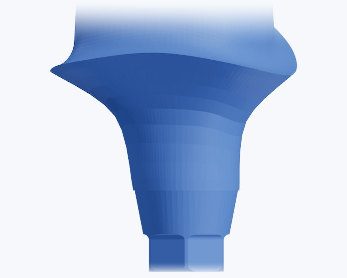
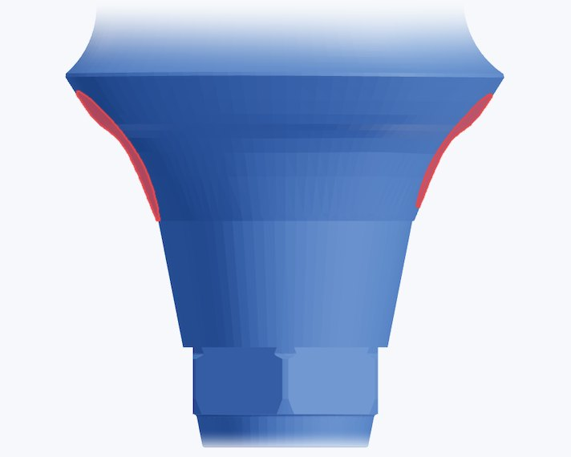
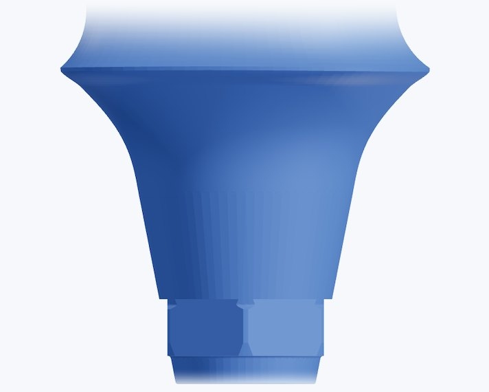
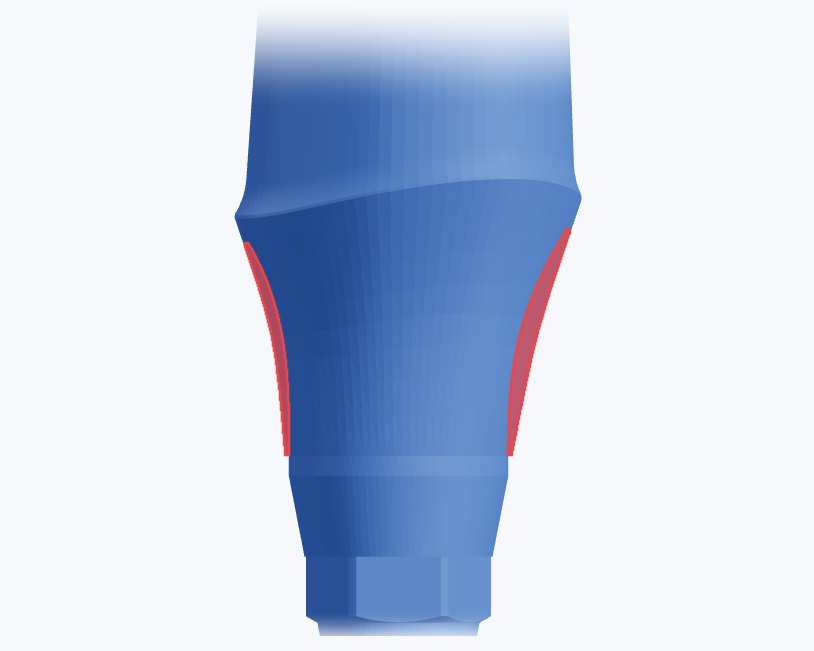
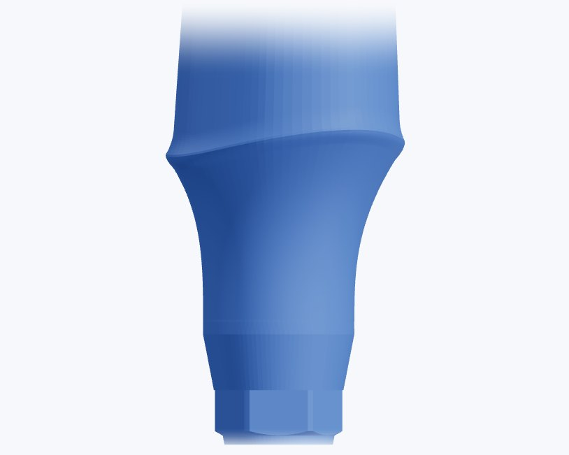

커스텀 어벗먼트
보이지 않는 하단부까지,


보이지 않는 하단부까지,
설계합니다.
어벗츠 기공소의 커스텀 어벗먼트는 디자인부터 산업용 CNC 가공, 치수 검사까지 이어서 진행합니다.
디자인 파일이 있으시면 제작만 맡기실 수도 있습니다.
디자인 + 제작제작만티타늄 Grade 5치수 검사 후 출고

하단부에서 자주 보이는 모양
잇몸 아래 들어갈 면,
물결무늬커프에 가로 · 세로 결 단차경계가 계단처럼 꺾임 
볼록하단부가 볼록하게 부풂
잇몸 아래 들어갈 면,
자동 연결에 맡기면.
크라운이 닿는 면은 기공사가 설계하지만, 커프와 커넥션은 CAD 프로그램이 자동으로 이어 붙이는 경우가 많습니다.
자동으로 이어 붙인 하단부에서는 이런 모양이 자주 보입니다.


어벗츠 기공소의 설계
커프부터 커넥션까지,

기존 디자인CAD가 자동으로 이어 붙인 하단부

어벗츠 기공소직접 설계한 하단부
커프부터 커넥션까지,
한 곡선으로.
같은 케이스, 같은 크라운 면. 어벗츠 기공소는 하단부까지 직접 설계합니다.
결 없이 매끈한 커프단차 없이 이어지는 경계커프부터 커넥션까지 한 곡선
깊게 식립한 케이스
깊게 식립할수록,
기존 디자인볼록하게 부푼 하단부 어벗츠 기공소오목한 곡면 기존 디자인직선으로 오른 커넥션 어벗츠 기공소라운드지게 오른 곡선
깊게 식립할수록,
하단부 곡선을 세심하게.
식립 깊이가 깊을수록 하단부가 길어지고, 그만큼 하단부 곡선을 어떻게 설계하는지가 중요해집니다.




빨간색은 어벗츠 기공소 디자인보다 바깥으로 나온 부분입니다.
제작 공정
디자인한 그대로,

CNC 가공제조 파트너 가공실 
가공 설비산업용 CNC 
치수 검사검사 후 출고
디자인한 그대로,
산업용 CNC로 한 번에.
기공소용 밀링기 대신 산업용 CNC로 디자인 파일을 한 번에 가공하고, 치수를 검사한 뒤 출고합니다.
01디자인어벗츠 기공소
02디자인 확인필요할 때 프로그램에서
03CNC 가공제조 파트너
04치수 검사검사 후 출고
05출고묶음 · 신속
의뢰 정보 · 제품 정보
의뢰할 때 필요한 것과
의뢰할 때 필요한 것과
제품 정보.
| 의뢰 방식 | 디자인 + 제작 / 제작만(디자인 파일이 있을 때) |
|---|---|
| 함께 보낼 자료 | 스캔바디 스캔, 임플란트 제조사 · 규격, 대합치 · 교합 |
| 출고일 | 묶음 · 신속 중 선택. 디자인을 포함하면 1영업일이 더해집니다. |
| 품목명 · 모델명 | 임플란트 상부구조물 · CA6512 |
| 소재 | Titanium Grade 5 |
| 제조원 | (주)애크로덴트 (식약처 의료기기 제조업 허가) |
| 사용 시 주의 | 1회용 제품입니다. 사용 전 첨부문서를 확인하십시오. |